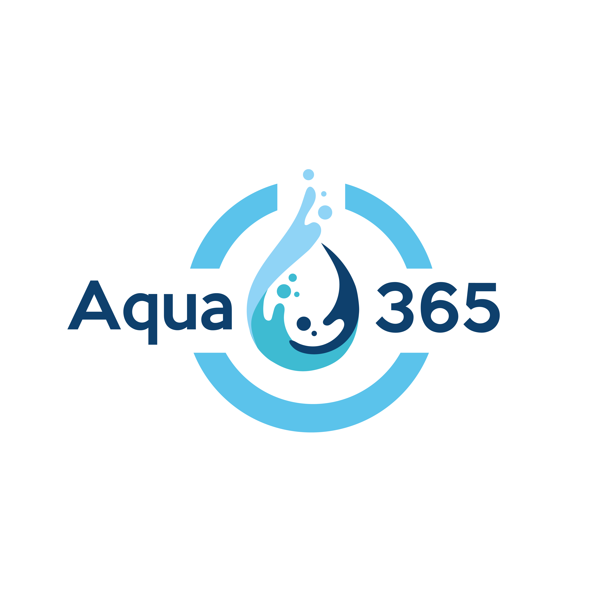
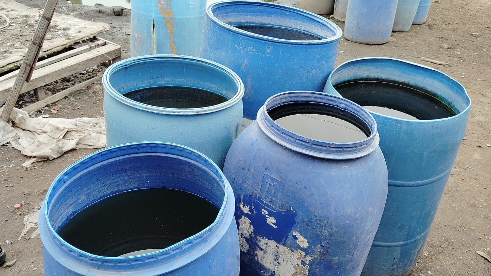
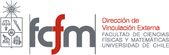

Desafío 01
Escuela rural
Región por definir

AQUA365'">Súmate a un programa interdisciplinario para transformar desafíos reales del agua en soluciones construidas junto a las comunidades.
"Los estudiantes tienen el potencial para abordar los desafíos sociales y ambientales del futuro."
Millones de personas enfrentan problemas cotidianos de acceso, calidad y distribución del agua. Estos no son solo desafíos de ingeniería: requieren escuchar, comprender y actuar junto a quienes los viven.
AQUA365 articula conocimiento académico, mentoría profesional y saber comunitario para desarrollar soluciones pertinentes, viables y construidas desde el territorio.
"Los desafíos del agua no ocurren durante una hackathon.
Existen los 365 días del año."

AQUA365 es una iniciativa que impulsa a estudiantes universitarios a diseñar soluciones innovadoras para los desafíos del agua en comunidades vulnerables.
Cuatro etapas desde la formación inicial hasta la presentación ante un jurado. Cada una cuenta con acompañamiento de facilitadores, facilitadoras, mentores y mentoras.
Cada desafío se diagnostica en terreno junto a la comunidad. Estudiantes trabajan sobre una realidad concreta que exige escucha, rigor técnico y diseño participativo.
Nombres, fotografías y descripciones deben ser validados y autorizados por las comunidades antes de publicar.
Mi experiencia en AQUA365 fue muy enriquecedora y distinta a lo que uno vive normalmente en la universidad. Fue un proceso desafiante que me permitió enfrentar la realidad de llevar un proyecto a terreno, con todas sus limitaciones.
AQUA365 te permite poner tus conocimientos al servicio de desafíos hídricos reales y aportar, desde tu etapa universitaria, al desarrollo de soluciones junto a comunidades en contexto de vulnerabilidad.
Pueden postular estudiantes de educación superior, de pregrado o postgrado y de distintas disciplinas. El programa es abierto e interdisciplinario, aunque está especialmente orientado a estudiantes de carreras con base científica que quieran aplicar sus conocimientos a desafíos reales.

FCFM U. de Chile'">Pueden postular estudiantes de educación superior, de pregrado o postgrado y de distintas disciplinas. El programa es abierto e interdisciplinario, aunque está especialmente orientado a estudiantes de carreras con base científica. No se exige pertenecer a una universidad específica ni tener un avance curricular determinado.
No. El programa incluye capacitaciones, materiales de referencia, diagnósticos comunitarios, acompañamiento y mentorías. Lo más importante es tener disposición para aprender, trabajar en equipo y comprometerse con un desafío real.
La dedicación estimada es de 3 horas semanales. Algunas semanas pueden concentrar actividades relevantes, como mentorías, hitos de presentación o visitas a terreno.
El programa es híbrido y también cuenta con una opción de participación completamente online. Quienes participen online podrán integrarse a las actividades formativas, el trabajo de equipo y las mentorías, pero no podrán participar en las visitas presenciales a terreno.
No. La participación es gratuita. El programa y la implementación de los proyectos son posibles gracias a empresas aliadas comprometidas con el desarrollo de las comunidades y con las capacidades de los y las estudiantes.
Sí. Puedes postular con el equipo parcial o completamente conformado. Si te inscribes de manera individual, la organización del programa te contactará para apoyar la conformación de un equipo.
Los equipos reciben capacitaciones, diagnósticos y materiales sobre las comunidades, acompañamiento de facilitadores y facilitadoras, mentorías con profesionales e instancias de retroalimentación durante el desarrollo de la propuesta.
Las propuestas finales son presentadas ante un jurado de expertos y expertas. Las propuestas seleccionadas serán validadas en el territorio y podrán ser implementadas por Ingeniería Sin Fronteras Chile. Los equipos seleccionados podrán sumarse al voluntariado y participar del proceso de validación e implementación.
Las comunidades participan en la comprensión del desafío y retroalimentan las propuestas desde su conocimiento del territorio. El proceso busca diseñar con las comunidades y no solamente para ellas. Las visitas presenciales son coordinadas por la organización para asegurar una relación respetuosa y pertinente.
Sí. Los y las estudiantes que completen las etapas del programa y entreguen su informe final recibirán un certificado oficial de participación, de acuerdo con las bases vigentes.
AQUA365 2026 convoca a estudiantes de ingeniería y carreras afines a transformar desafíos reales del agua en propuestas construidas junto a las comunidades.